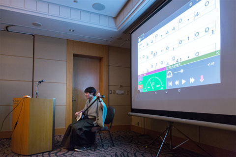

MITOU MAGAZINE
今月号のピックアップ
未踏サロン・未踏研究会・理事会開催のご報告
未踏社団合宿#0開催のご案内
目次 見出しをクリックすると詳細へ移動します
■１ 未踏サロン開催のご報告
7月31日（金）には、「第1回 未踏サロン」を六本木ヒルズレジデンス43Fのスカイラウンジを貸し切り開催しました。
当日は普段入る機会のない会場に加え、会員以外にも社団の活動に関心のあるITスタートアップやVCの方も参加し、少し特別な雰囲気の中で幅広い交流が繰り広げられました。
中でも最も好評を博したのが会員によるLTです。
清水亮さん（ユビキタスエンタテイメント）からは「ディープラーニングのこれから」についてのご発表がありました。
安川要平さん（ヤスラボ）には「小・中学生のためのプログラミング道場 CoderDojo Japan」についてご紹介いただきました。
法人会員であるさくらインターネット株式会社の由井文さんからは、スタートアップ支援プログラム「さくらでスタートアップ！」と題して製品群やご支援内容についてのご紹介がありました。
また、当日飛び入りで、高野保真さんから、未踏でやったこと、起業してやったこと、博士の研究でやったことについてご発表がありました。
技術的なトレンドや各自の近況報告も交えた話に登壇者の周りを幾重もの人だかりが囲んでいました。
■２ 未踏研究会開催のご報告
未踏研究会とは、従来の学会の枠に留まらない自由で未踏的な研究活動の基盤となる研究会です。ワーキンググループ（WG）の設立・参加を行いやすくすることで、そこでの活動を通じて、研究成果の発信、会員同士・社団外の創造的人材との交流の促進、将来的な研究会の下地作りなどを行います。
未踏研究会として最初のイベント「未踏研究会キックオフ」が8月4日（火）に開催され、理事の荒川による未踏研究会の説明に続き、3つのWGの立ち上げが発表されました。
１）「起業ワーキンググループ」
発起人：小池 宏幸（2010年、プラスアド株式会社）起業に関して信頼を置ける情報や人との交換・交流を促すことで、未踏クリエーターの新規起業や起業経験者の支援を行うWGです。対象者は未踏関係者に限定しながら外部有識者との交流を図ることで質を担保していきます。まずは渋谷周辺で起業をネタにランチ会・飲み会をするところから開始する予定ですので、興味のある方は以下のFacebookグループに参加申請をお願いします。
未踏研究会 起業ワーキンググループ（ https://www.facebook.com/groups/1136006429748639/ ）
発表資料（ http://www.slideshare.net/plusadd/wg-20150804-51290706 ）
２）「未踏プログラミング教育ワーキンググループ」
発起人： 鵜飼 佑（2011年、マイクロソフトディベロップメント株式会社）、安川 要平（2012年、ヤスラボ）、鈴木 遼（2013年、早稲田大学）未踏クリエイターの特徴の一つとしてプログラミング教育への関心の高さが挙げられます。このWGでは、プログラミング教育に携わる未踏出身者を中心として、それぞれのプロジェクトで得られた知見を交換することを目的としています。参加希望の方は、以下のFacebookグループから参加申請をお願いします。
Facebookグループ（ https://www.facebook.com/groups/797408987025118/ ）
３）「生産性向上ワーキンググループ」
発起人： 西尾 泰和（サイボウズ・ラボ株式会社）メンバーが単時間当たりに作り出す価値の向上を目指すWGです。まずは「知識による生産性向上」、つまり、知識の習得にかかる時間をいかに減らすかににフォーカスします。そのために必要なのが、採択年度の異なる出身者がそれぞれの得意ジャンルを持ち寄れるフラットな場作りです。集まるのが最初の一歩、一緒に居続けるのが進歩、 一緒に働くのが成功です。生産性向上WGの活動はkintone上でグループがありますので、興味のある方は西尾さんにコンタクトをとってみてください。
発表資料（ http://www.slideshare.net/nishio/ss-51288295 ）
当日は定員いっぱい30人の参加があり、二次会も含め濃密なコミュニケーションを行うことができました。研究会やWGの作り方、未踏社団からの支援内容などの詳細はこちらのPDFをご覧ください。 （ http://www.mitou.org/assets/pdf/about_sig_mitou.pdf ）
■３ 理事会開催のご報告
9月18日（金）、14名の理事（skype参加2名を含む）が集まり理事会を開催いたしました。代表理事・竹内より本年3月10日の理事会以降における社団の事業報告がされましたので、メルマガでは主な内容をお届けします。
１，正会員加入状況
現在は100名の加入。今年度中に200〜300名の正会員加入を目指す。
２，法人会員について
以下の4社が加入。
株式会社リクルートホールディングス、富士通株式会社、株式会社プロコミット、さくらインターネット株式会社
法人会員以外に下記の企業から，主に会員向けのいろいろなサポートの提供を受ける。
株式会社AGSコンサルティング、サイボウズ株式会社、Xamarin Inc.、株式会社DMM.com、日本マイクロソフト株式会社、株式会社マネーフォワード、森・濱田法律事務所
３，経済産業省からの委託事業について
経済産業省から平成26年度補正予算「先端課題に対応したベンチャー事業家支援等事業（ITベンチャーのスタートアップ促進事業）」の募集があり、公募要領に基づき、IPA（未踏事業）、CSAJ（U20，U22プログラミングコンテスト）と未踏社団を代表とした未踏コンソーシアムを結成。
この事業は、
A:革新的ベンチャーのスタートアップ支援モデル構築事業
B:先輩起業家等によるスタートアップ支援モデル実証事業
の2つに分割されており，未踏コンソーシアムとして事業Aに応募するとともに，事業Bには未踏社団単独で応募。
その結果、8,000万円の予算の事業Aに未踏コンソーシアムが採択され、このうち未踏社団は6,000万円分の委託事業を受託。事業Bでは1,000万円の委託事業を受託し、財政上の活動基盤を得ることができた。
事業Aの細目と未踏社団に関係する部分について
-
（1）スタートアップ加速のための支援モデルの調査分析
海外のスタートアップアクセラレータの事例調査などと併せ，日本における革新的ベンチャーのスタートアップ加速のための支援モデルのあり方について分析・提言を行う。 - （2）イノベータの育成に係る従来事業の成果調査及び人的ネットワークの構築
- 未踏OB/OGの追跡調査、すなわち未踏クリエータの「再発掘」
インタビューやアンケートなどの手法を交え、数百名程度の未踏IT人材のプロフィールの収集を行う。この成果はそのまま未踏IT人材の露出・広報に利用し，未踏IT人材のネットワーク形成に役立てる。 - 相互交流により、人的ネットワークを構築
サイボウズ社（kintone）・マイクロソフト社（Office 365）それぞれから無償提供されたソフトを用い、オンライン上のコミュニケーション・コラボレーションを推進中。また、未踏サロンと未踏研究会をはじめとして実際に人が集まる場を形成。今後は研究会やワーキンググループの活動をさらに促進していく予定。 - IPAの未踏事業の枠組ではやりにくい出口誘導としての起業支援
事業Bとも関連し「未踏メンターズ構想」の実施に向けて検討中。同構想については、次回以降のメルマガなどで取り上げる予定。
- 未踏OB/OGの追跡調査、すなわち未踏クリエータの「再発掘」
-
（3）金融的手法によるイノベータ支援方法の可能性に関する調査
契約や資金回収・再投資モデルの可能性の分析などにより、ベンチャーキャピタルとベンチャー企業とのよりよい関係性構築に向けた具体的なモデル設計を行う。 -
（4）全体の調査研究報告書の作成及び関連イベントの開催
事業Bも含めてIPAが取りまとめを行う。
事業報告の後には2014年度スーパークリエータ2名（神武里奈さん、濱中敬人さん）によるプレゼンが行われ、理事からは盛んに質問やアドバイスが飛んでいました。
■４未踏社団合宿#0開催のご案内（2015年11月27-29日）
理事の西尾です。未踏社団では開発合宿的なことをバンバンやっていきたいと思っていますが、 最初からすごいのをやろうとするといつまでたってもプロジェクトが開始しないので、 まずはソフトウェアで言うところのプロトタイピングをやろうと思っています。
今回、最初の一歩として「未来の開発合宿」をテーマとして11/27-29で小規模な合宿を開催します。興味のある方は下記URLから詳細解説をご覧ください。 (ここにあったリンクは会員向け情報のため削除されました)